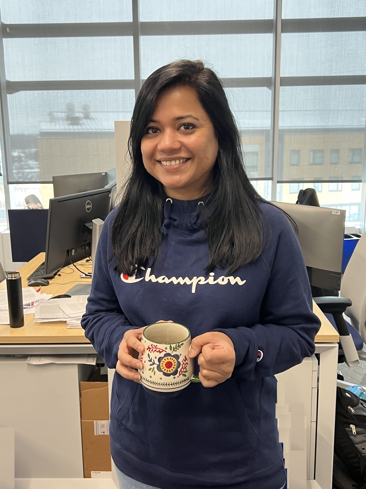

Wireless & NextG Security
Security analysis and defense for Wi-Fi, wireless protocols, connected devices, and next-generation communication systems.
- Wi-Fi security
- Protocol analysis
- NextG networks
Grand Valley State University
Secure Wireless & Intelligent Systems
We study how wireless, intelligent, and connected systems can remain secure, resilient, and trustworthy as attackers and technologies evolve.
Our mission
The Hoque Research Lab investigates practical defenses for wireless, networked, and learning-enabled systems. Our work connects rigorous security analysis with experimental validation and implementation.
We are especially interested in defenses that change the attack surface, use artificial intelligence responsibly, and prepare communication systems for emerging post-quantum threats.
Research
Research at the intersection of cybersecurity, AI, wireless systems, and quantum-resistant security.
Security analysis and defense for Wi-Fi, wireless protocols, connected devices, and next-generation communication systems.
Intelligent detection and adaptive protection mechanisms for cyber-physical, wireless, and networked environments.
Understanding attacks against learning systems and developing robust models for security-sensitive applications.
Quantum-resistant security mechanisms and migration strategies for connected and resource-constrained systems.
People
Add current graduate researchers, undergraduate researchers, collaborators, and alumni here.

Principal Investigator
Assistant Professor researching wireless security, adaptive cyber defense, adversarial machine learning, and quantum-resistant systems.
Faculty profileStudent researchers
Replace this card with student names, programs, research topics, profile photographs, and links.
Join the lab
Motivated undergraduate and graduate students interested in cybersecurity, AI, wireless systems, or post-quantum security are encouraged to get in touch.
Contact
Department of Information Science & Technologies
College of Computing
Grand Valley State University